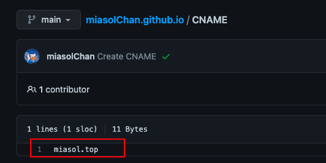

个人博客搭建：Hexo + GitHub + 域名绑定
准备
安装Hexo
安装Hexo
打开Hexo
hexo init mywebsite如果Mac出现
zsh: command not found: hexo问题请点击 Mac出现command not found: hexo问题如何解决进入
mywebsite并且安装npmaboutcd mywebsite npm install
选择博客主题
选择想要的主题，并且在终端进入
mywebsite下的themes文件夹中输入git clone进行下载在
_config.yml中修改theme: 主题文件夹名例如我选择的是white主题，但是clone下来的文件夹名为
hexo-theme-white所以在_config.yml中的 设置应该为theme: hexo-theme-white现在已经建好了原始的主页，如果想要看网站，那么输入
hexo s(等同于hexo server) 然后在浏览器中进入http://localhost:4000就能看到了。在发布前，也可以用该方法进行本地调试。
发布在Github上
在终端登录github
git config --global user.name GitHub用户名 git config --global user.email GitHub邮箱生成SSH
ssh-keygen -t rsa -C GitHub邮箱此时
id_rsa.pub文件中就添加了你的GitHub账号进入GitHub
Settings -> SSH and GPG keys点击New SSH key，把id_rsa.pub里的内容复制粘贴在这里在github上建一个仓库 “用户名.github.io”
打开
_config.yml并且修改以下内容deploy: type: git repo: 仓库地址 branch: main message: "提交信息"安装hexo-deployer-git自动部署发布工具
npm install hexo-deployer-git --save发布
hexo deploy发布的时候可能需要输入用户名和密码，但是现在github已经不能用登录密码发布了，所以需要生成token用token替代密码
打开“用户名.github.io”就能看到你的网站了
绑定域名
首先你需要购买自己的域名，阿里云、腾讯云等等都可以
在Github项目主页
Add file->Create new file，创建一个名为CNAME的文件，并且填入不含https://和www的域名名字，例如： 这样创建好CNAME文件后，每次更新网站都需要重新创建CNAME，所以要将该文件保存到本地。具体位置为当前使用主题的source文件夹下。例如，我使用的butterfly主题，所以保存位置为：
/mywebsite/themes/butterfly/source进入仓库中的
Settings->Pages->Custom domain确保填入的是自己的域名注意！！在更新提交后，如果打开域名遇到404的情况，可能是DNS解析未完成
在终端ping自己的域名并获取ip地址
以阿里云为例，在控制台进行域名解析，添加两个A记录，主机记录分别为
www和@，记录值为ping所得的IP地址，稍等一下就可以通过你的域名访问了
Mac可能出现的问题
zsh: command not found: hexo
终端输入
cd .npm-global/bin输入
pwd查看路径一般这里的路径是：
/Users/xxx/.npm-global/bin输入
vi ~/.zshrc编辑
.zshrc文件，输入export PATH=$PATH:/Users/xxx/.npm-global/bin此时输入
hexo -v如果还报错，则输入source ~/.zshrc，再输入Hexo就没问题了
Hexo常用命令
https://hexo.io/zh-cn/docs/commands.html
#新建页面
hexo new page "About Me"
# 等同于hexo clean,清除缓存文件 (db.json) 和已生成的静态文件 (public)。
# 在某些情况（尤其是更换主题后），如果发现您对站点的更改无论如何也不生效，您可能需要运行该命令。
hexo cl更新注意事项
DNS解析未完成导致同步问题
一般在提交后，Github的Custom domain输入框下会出现“DNS Check in Progress”，此时需要等到其变为“DNS valid for primary”时再通过域名打开网页否则会404错误。